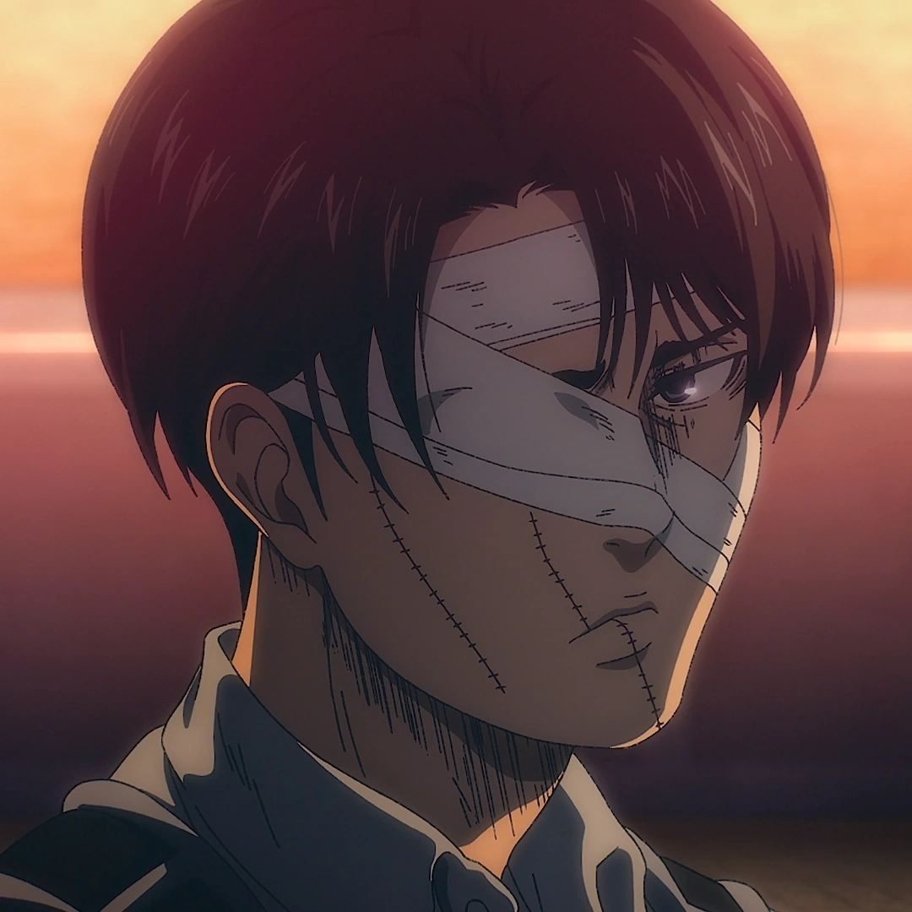

Levi Ackerman
Attack on Titan
About
Levi Ackerman is a captain in the Survey Corps and is widely recognized as humanity's strongest soldier. Despite his short stature, his combat abilities are unmatched. He is a master of the 3D Maneuver Gear and has killed more Titans than any other soldier. He is also the uncle of Mikasa Ackerman.
Abilities
- 3D Maneuver Gear: Expert usage for Titan combat
- Swordsmanship: Master of blade combat
- Acrobatic Combat: Incredible speed and agility
- Tactical Thinking: Excellent battlefield strategy
- Strength: Superhuman physical strength
Personality
Levi is stoic, serious, and pragmatic. He has a short temper and values cleanliness and order. Despite his harsh exterior, he deeply cares about his comrades and will do anything to protect them. He is known for his catchphrase "I'll kill you" and his unwavering determination to eradicate all Titans.